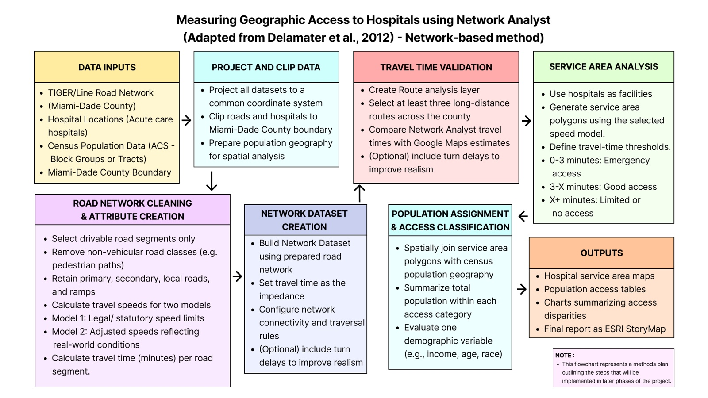
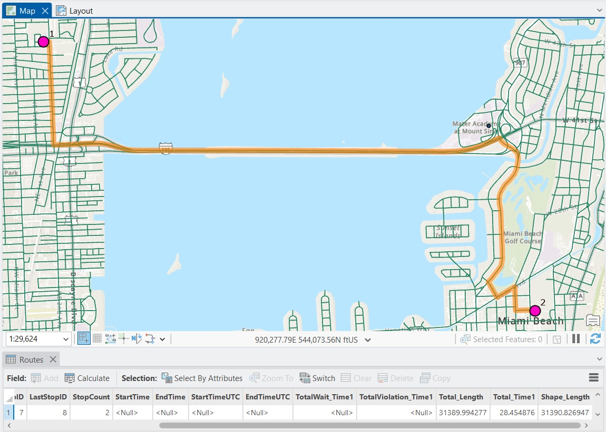
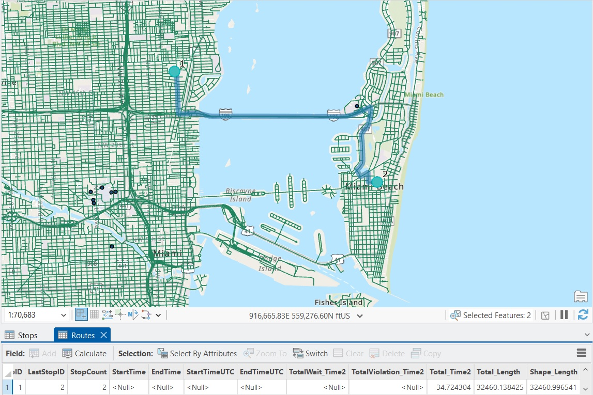
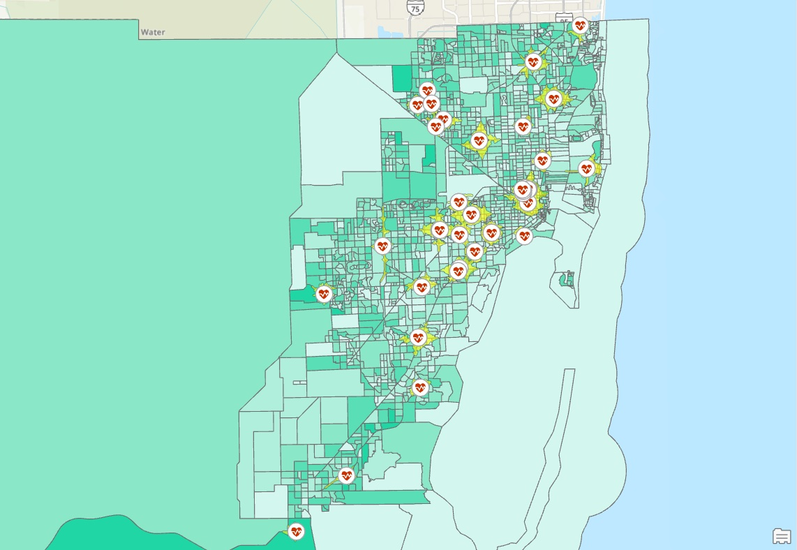
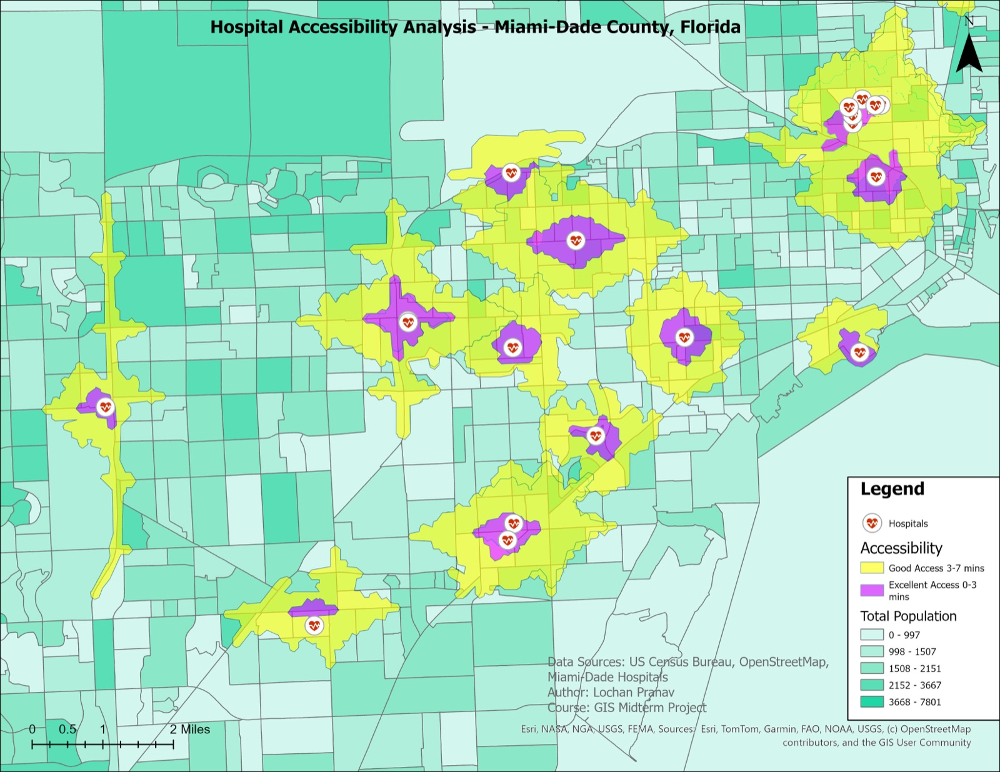

Context
Access to healthcare depends on where hospitals are and how the road network reaches them. The question was how many Miami-Dade residents can reach a hospital within 3 minutes, within 7 minutes, and beyond, and where the gaps are.
Method
Road network, hospital locations and census population were projected to a common coordinate system. The roads were cleaned to drivable segments only, and travel time was calculated for every segment from its road classification and speed limit. A network dataset with travel time as the impedance was built in Network Analyst.
Two travel time models were tested. Model 1 uses typical speed limits by road class; model 2 assumes slower speeds for congested conditions. Three routes were generated under each and compared with Google Maps. North Shore Medical Center to the Monaco Yacht Club took about 31 minutes under model 1 and 40 under model 2; Miami Jewish Health to the Miami Beach Convention Center 28 and 34; Hialeah Park to the airport 26 and 33. Model 1 came closest to Google Maps and was used for the analysis.



Service areas
Service area polygons were generated around each hospital for 0 to 3 minutes, excellent or emergency-level access, and 3 to 7 minutes, good access. Census block group population was then spatially joined to the zones to count who lives in each.


Result
| 1,612 | residents within 3 minutes of a hospital, the emergency-level zone |
| 890,786 | residents within 3 to 7 minutes |
| 1,809,369 | residents beyond the 7 minute threshold, with limited access |
Hospitals concentrate in central and urbanized areas, so accessibility is highest there. Only a small number of residents live in the 0 to 3 minute zone. A much larger share is within 3 to 7 minutes, and a significant number of block groups fall outside both zones, mostly away from the central clusters. Those are the areas where planning or infrastructure could improve access.
Limitations
The model assumes constant travel speeds, with no congestion, accidents or time-of-day variation, and that residents travel by car with equal access to the road network. Hospital capacity, quality of care and available services are not considered. Future work would add traffic data, public transport accessibility and hospital capacity.